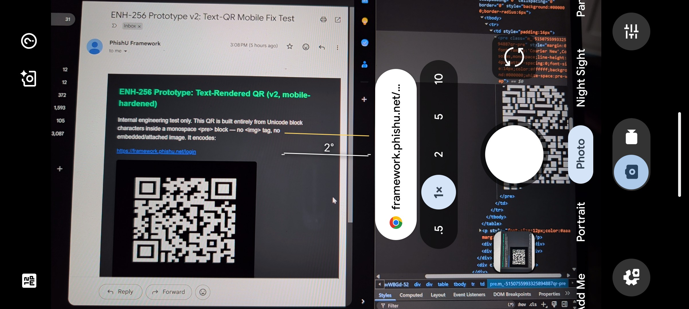
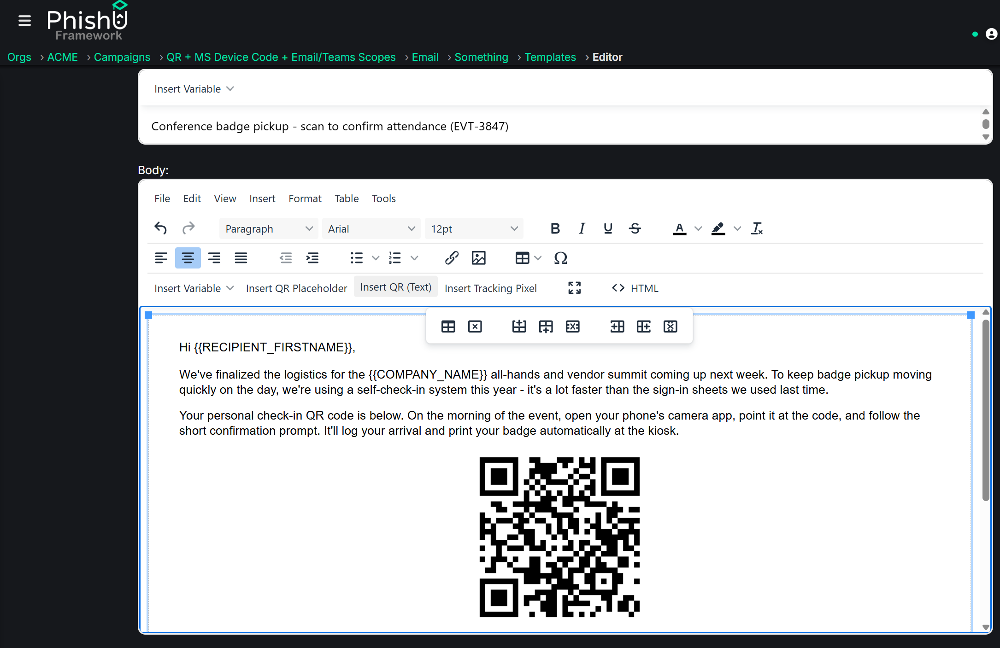

QR code phishing, or "quishing," has been climbing for a while. The pitch is simple for an attacker: put a QR code in front of a target on a desktop, and they tend to scan it with a phone. The link opens on a device that is often less monitored, outside the corporate browser, and away from endpoint controls. The QR itself also hides the destination until the moment of scan.
Defenses adapted on two fronts. Secure Email Gateways (SEGs) started scanning image attachments and embedded images, decoding any QR they found, and following the link to judge it. Email clients hardened too: most now block remote images by default and wait for the user to click "show images." That combination closed a lot of the easy quishing. A code the gateway can decode gets caught, and a code that arrives as a blocked remote image may never even display for the target to scan. So attackers changed the shape of the code.
In research reported in mid-2026, Kaspersky described a variant that is getting real traction: build the QR code out of text characters and markup directly in the email body, with no image object at all. There is no attachment to open, no embedded picture to decode, and nothing for an image-based or optical-character-recognition (OCR) scanner to key off. Because it is markup and not a remote image, an inbox with images turned off still paints it. The message shows a perfectly scannable QR to the human reading it, image-blocking and all.
The short version: An image-based QR gives a filter something to decode and can be suppressed by an inbox that blocks remote images. A QR assembled from markup does neither. It renders as a normal grid even with images disabled, and there is no image object anywhere in the message for image or OCR scanning to catch. The PhishU Framework now ships this as a second QR mode, so authorized assessments can test whether it lands.
Why an Image-Based QR Is Catchable
When a QR arrives as an attachment or an embedded image, a modern SEG has a clear job. It extracts the image, runs QR decoding, pulls out the URL, and evaluates it against reputation, redirect chains, and known-bad lists. It can also OCR the picture to spot brand logos or login-form language rendered as an image. None of this is exotic anymore. It is table stakes for a good email filter, and it is the reason plain image quishing does not perform like it used to.
The weak point is the assumption underneath it. That whole pipeline starts by finding an image. If there is no image, the pipeline never runs.
There is a second, more familiar control that leans on the same assumption. Most email clients block remote images by default and only load them when the user clicks "show images." Security teams often treat that setting as a partial answer to quishing, on the theory that a QR delivered as a remote image simply will not display. Against an image-based QR, that mostly holds. Against a QR drawn from markup, it does nothing, because there is no remote image to block. The grid is part of the message layout and paints immediately.
What a Text-Rendered QR Actually Is
A QR code is just a grid of black and white squares. Nothing says those squares have to come from a bitmap. You can draw the same grid with block characters in a monospace font, or with a table where every cell is colored black or white. The email client paints the grid from the markup. The recipient's phone camera sees a valid QR and scans it normally.
To the mail filter, the message is text and layout instructions. There is no picture to extract, so the decode-and-evaluate pipeline has nothing to work on. That is the entire trick. It is not clever cryptography. It is a category error in how a lot of email scanning is built.

Reproducing It in the PhishU Framework
The PhishU Framework already had image-based quishing: a toolbar button in the email template editor drops a QR placeholder, and at send time the platform swaps it for a live QR pointing at the recipient's own tracking link. That is the standard, proven path, and it stays.
The new work adds a second button next to it, "Insert QR (Text)." Pick it, and at send time the Framework builds the QR as an HTML table of individually colored cells instead of an image. No <img> tag. No attachment. No embedded bitmap anywhere in the message. Each recipient still gets a unique tracked destination, so click-through, engagement, and reporting all work exactly like every other technique in the platform. The operator picks a mode from a dropdown. The plumbing is handled.

Being precise about the implementation matters here, because it is a point of technical honesty. PhishU's version does not draw the code from Unicode block glyphs, which is the most literal reading of the in-the-wild technique. It uses a table of colored cells. Both approaches share the property that matters: no image object exists in the message for a scanner to find. The reason for the choice is reliability, and that is its own story.
Email Rendering Was the Harder Adversary
The evasion idea is easy to describe. Making it render as a clean, scannable square in real inboxes was the actual engineering problem. Three separate rendering bugs turned up along the way, each found by sending to real Gmail and Outlook accounts and looking at what arrived.
Bug one: font-drawn glyphs stretch on mobile
The first attempt was the faithful reproduction: draw the QR from half-block characters in a monospace font, inside a preformatted text block. It scanned cleanly from Outlook desktop and Gmail on the web. It failed in the Gmail mobile app, where the code rendered visibly non-square, stretched sideways so the module grid no longer read as a QR.
The cause is font handling. A glyph-drawn QR depends on the mail client preserving font family, line height, and letter spacing exactly. Gmail's mobile app applies its own font boosting and auto-scaling, and it does not keep those properties in lockstep. The square grid the half-block trick relies on falls apart. This is the core reason font-glyph QR art is fragile as a production technique even though it is a faithful copy of the attacker method. It inherits every mail client's font-rendering quirks.
Bug two: Gmail silently clips the message at ~102KB
The fix for the font problem was to drop fonts entirely and use an HTML table where every module is a cell with an explicit pixel width and height. Table cell dimensions are the single most consistently honored layout primitive across mail engines, which is exactly why HTML email developers have nested tables for decades to survive Outlook's Word-based renderer.
The naive version repeated a full inline style block on every cell. For a typical short-link QR that is well over a thousand cells, which produced roughly 230KB of HTML. Gmail silently truncates messages over about 102KB and shows a "[Message clipped]" banner. The cut landed mid-table, the browser tried to repair the broken markup, and the result was a garbled, half-collapsed grid. It looked like a CSS bug. It was not. Dumping the raw QR matrix on its own showed clean finder patterns in all three corners. The grid was structurally perfect. The only problem was payload size.
Bug three: Outlook repaints white cells grey in dark mode
The size fix was run-length compression. A QR has long runs of same-colored modules in its quiet-zone border and finder patterns. Merging consecutive same-color cells in a row with colspan, instead of emitting one cell per module, cut the markup from roughly 230KB down to about 50 to 65KB. That is comfortably under Gmail's clip threshold, and it uses nothing but legacy HTML width, height, and bgcolor attributes, with no dependency on a CSS class or a <style> block in the document head. That last part is deliberate, because the snippet gets spliced into an arbitrary spot inside an operator's already-composed email. There is no document head to control at that point.
One more issue surfaced. Even with the white color set two different ways on every white cell, Outlook's automatic dark-mode recoloring overrode it and showed grey. Outlook applies that transform at render time. The source markup does not control it directly. The fix was a small override targeting the attributes Outlook stamps on the page when dark mode is active, forcing the explicit colors back. Confirmed working on Outlook desktop.
| Approach | What broke | Outcome |
|---|---|---|
| Unicode block glyphs in a monospace font | Gmail mobile font boosting stretched the grid non-square | Rejected as fragile across clients |
| HTML table, one styled cell per module | ~230KB payload tripped Gmail's ~102KB clip and garbled the render | Rejected on size |
| HTML table with colspan run-length compression | Outlook dark mode repainted white cells grey (fixed with an override) | Shipped |
Known residual, left in on purpose: Gmail's mobile app runs its own dark-mode recoloring that the Outlook-specific fix does not reach, so white cells can show as light grey there. It is cosmetic. The code still scans correctly with the tint, and the realistic quishing threat model is a code displayed on a desktop and scanned with a second device, not a code scanned off the same phone showing its own mail app. It was deprioritized rather than chased further.
Why a Table of Cells and Not Unicode Art
It is worth stating plainly. PhishU's implementation is not a literal copy of "a QR built from Unicode characters." It reaches the same no-image-object property through a more reliable primitive. That distinction is a strength to be upfront about, not something to hide.
A SEG that renders the full message to a headless browser and screenshots it before scanning would catch either approach equally, because both draw a visible QR. A SEG that looks specifically for image attachments and embedded image objects is defeated by both, because neither contains one. The delta between the two approaches is not evasion strength. It is delivery reliability across real mail clients. That is the finding worth publishing, because a lot of attacker-technique writeups never test whether the thing actually lands in an inbox, and this one turned up three reproducible client-rendering bugs on the way to something that does.
What Defenders Should Take Away
The lesson is not "text QR is unstoppable." It is that image-only scanning, and image-blocking, are the wrong places to draw the line.
- Do not treat "no image" as "no QR." Detection that renders the full message and scans the visual output catches a code no matter how it was drawn. Detection that only extracts and decodes image objects does not.
- Blocking remote images by default is not a quishing fix. It suppresses image-based codes, which is worth having, but a markup-drawn QR renders with images off. Admins should know the gap exists so it does not get quietly filed under "handled."
- Watch for QR-shaped structure in markup. A dense grid of tiny alternating black and white table cells, or a block of half-block glyphs in a monospace run, is a strong signal on its own.
- Train for the behavior, not the format. The human defense against quishing is the same regardless of how the code was built: be suspicious of a QR that wants you to authenticate, and check where it actually goes before entering anything.
- Test it against your own filters. The only way to know whether your gateway catches a markup-drawn QR is to send one through an authorized assessment and watch what happens.
Like every technique in the PhishU Framework, text-rendered quishing feeds targeted training and branded reporting tied to the outcome. When a campaign uses it, recipients get a training slide that shows them this exact variant, so they learn that a QR can arrive with images disabled and still be a trap, not just the image-based codes they may have been warned about before. If a target scans and clicks, that shows up in the campaign metrics, in the report, and in the training that explains the message they received.
PhishU's View
Attackers do not stand still, and the interesting ones move to whatever the current defenses were not built to see. Image scanning was a good answer to image quishing, so the technique stopped using images. That is a normal cycle. The job of a realistic phishing assessment is to test the current shape of the attack, not the shape from two years ago.
PhishU builds these techniques because seeing one land against your own people and your own filters is worth far more than a slide claiming you are covered. Text-rendered quishing is in the platform now, alongside the image-based version, so authorized engagements can measure exactly which one your controls stop and which one they miss.
Sources and Further Reading
- Bizcommunity: Hackers using text-based QR codes to bypass email security tools (Kaspersky research, 2026)
- Kaspersky Daily: quishing and email-security research
Want to see which QR your filters actually catch?
PhishU helps security teams, red teams, pentest firms, and MSSPs run realistic authorized phishing assessments, with evidence, training, and reporting tied to the outcome. Test image-based and text-rendered quishing against your real controls.
Contact Us